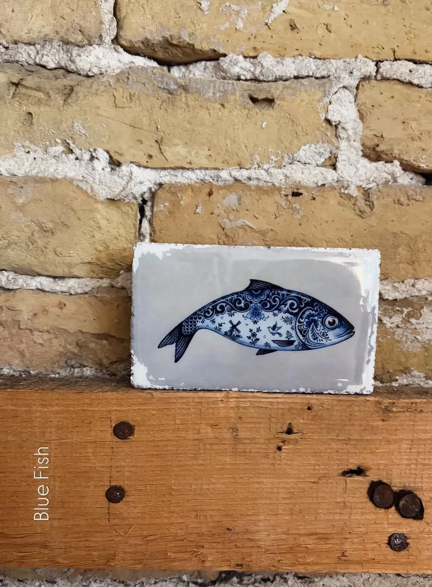

<style>
  .ps-page {
    display: grid;
    grid-template-columns: 1fr 1fr;
    align-items: stretch;
    min-height: 100vh;
  }
  .ps-photo {
    overflow: hidden;
    display: flex;
    align-items: center;
    justify-content: center;
    padding: 48px;
  }
  .ps-photo img {
    max-width: 100%;
    max-height: 100%;
    width: auto;
    height: auto;
    object-fit: contain;
    display: block;
    border-radius: 4px;
  }
  .ps-text {
    display: flex;
    flex-direction: column;
    justify-content: center;
    padding: 156px 80px 80px;
  }
  @media (max-width: 800px) {
    .ps-page { grid-template-columns: 1fr; }
    .ps-photo { height: 50vh; }
    .ps-text { padding: 56px 32px; }
  }
  .about-footer {
    padding: 40px 60px;
    border-top: 0.5px solid var(--border);
    display: flex;
    align-items: flex-start;
    justify-content: space-between;
    gap: 40px;
    background: transparent;
    max-width: 1140px;
    margin: 0 auto;
  }
  @media (max-width: 800px) {
    .about-footer {
      flex-direction: column;
      gap: 28px;
      padding: 32px 24px;
    }
  }
</style>

<section class="ps-page" style="background: var(--sand);">

  <div class="ps-photo">
    
  </div>

  <div class="ps-text">
    <h1 style="
      font-family: 'Josefin Sans', sans-serif;
      font-size: clamp(28px, 4vw, 44px);
      font-weight: 200;
      letter-spacing: 4px;
      text-transform: uppercase;
      color: var(--black);
      margin-bottom: 24px;
    ">Private Shopping</h1>

    <p style="
      font-family: 'Cormorant Garamond', serif;
      font-size: 19px;
      font-weight: 300;
      line-height: 1.75;
      color: var(--muted);
      margin-bottom: 28px;
    ">Shoppen met je vriendinnen, collega's of familie? Op woensdag- of donderdagavond openen we de winkel speciaal voor jullie. In alle rust passen, persoonlijk styling-advies, een drankje en iets lekkers erbij.</p>

    <p style="
      font-family: 'Cormorant Garamond', serif;
      font-size: 19px;
      font-weight: 300;
      line-height: 1.75;
      color: var(--muted);
      margin-bottom: 36px;
    ">Een private shopavond is voor groepen van 4 tot 10 personen, duurt ongeveer twee uur en is helemaal gratis. Stuur ons minimaal een week van tevoren een berichtje, dan plannen we samen een datum.</p>

    <a href="https://wa.me/31612220994" target="_blank" style="
      display: inline-flex;
      align-items: center;
      width: fit-content;
      font-family: 'Josefin Sans', sans-serif;
      font-size: 12px;
      letter-spacing: 2px;
      text-transform: uppercase;
      color: var(--black);
      background: var(--white);
      border: 0.5px solid var(--border);
      padding: 12px 24px;
      border-radius: 2px;
      text-decoration: none;
    ">Plan je avond</a>
  </div>

</section>
<!-- Footer -->
<footer class="about-footer">

  <div>
    <p style="
      font-family: 'Josefin Sans', sans-serif;
      font-size: 18px;
      font-weight: 200;
      letter-spacing: 8px;
      color: var(--black);
      margin-bottom: 12px;
    ">MOJ</p>
    <p style="
      font-family: 'Cormorant Garamond', serif;
      font-size: 16px;
      font-weight: 300;
      line-height: 1.7;
      color: var(--muted);
    ">MOJ Conceptstore<br>Voorstraat 53<br>8861 BE Harlingen</p>
  </div>

  <div>
    <p style="
      font-family: 'Josefin Sans', sans-serif;
      font-size: 11px;
      letter-spacing: 3px;
      text-transform: uppercase;
      color: var(--olive-dark);
      margin-bottom: 12px;
    ">Openingstijden</p>
    <p style="
      font-family: 'Cormorant Garamond', serif;
      font-size: 16px;
      font-weight: 300;
      line-height: 1.7;
      color: var(--muted);
    ">Maandag 13:00 - 18:00<br>Dinsdag t/m vrijdag 10:00 - 18:00<br>Zaterdag 10:00 - 17:00<br>Koopzondag 13:00 - 17:00 <span style="font-style: italic;">(elke 2e zondag)</span></p>
  </div>

</footer>
